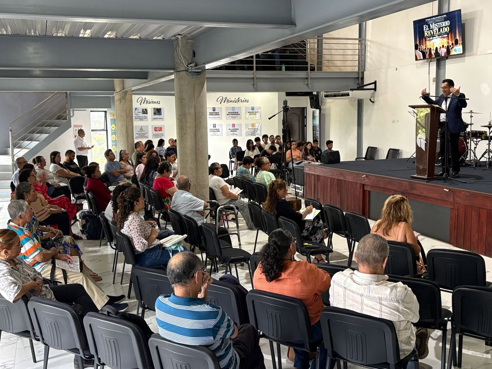
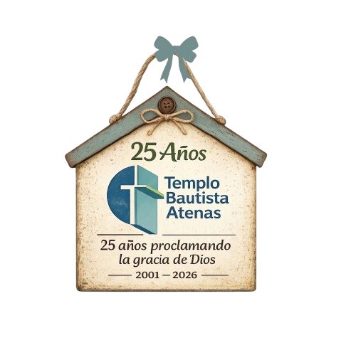
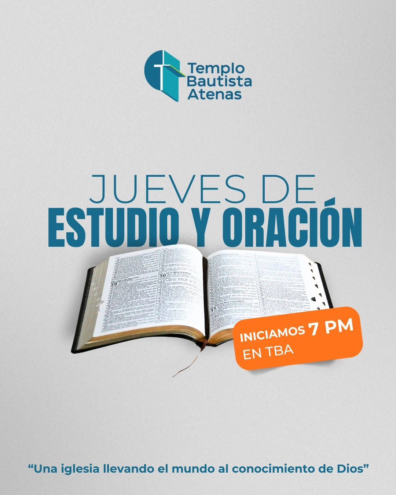
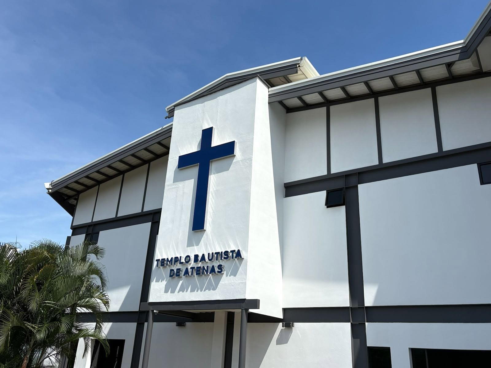

Culto dominical
Adoración, oración y enseñanza de la Palabra de Dios para toda la familia.
25 años · 2001 – 2026
Somos una iglesia llevando el mundo al conocimiento de Dios. Lo invitamos a ser parte de nuestra familia en la fe.

Reuniones
Puedes observar los Horarios de los distintos servicios.

Adoración, oración y enseñanza de la Palabra de Dios para toda la familia.

Un espacio para profundizar en las Escrituras y crecer en el conocimiento de Dios.

Grupos, actividades y servicio comunitario para niños, jóvenes y adultos.

Sobre nosotros
Desde 2001, el Templo Bautista Atenas ha sido un hogar para quienes buscan conocer a Dios. Hemos visto su obra en cada etapa: desde nuestra primera capilla hasta el templo actual.
“La fidelidad de Dios nos ha perseguido por 25 años y seguirá persiguiéndonos.”
Soli Deo Gloria